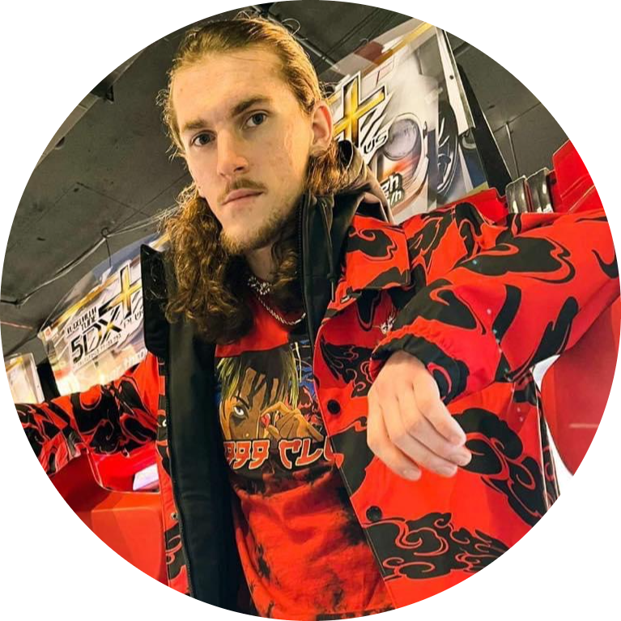
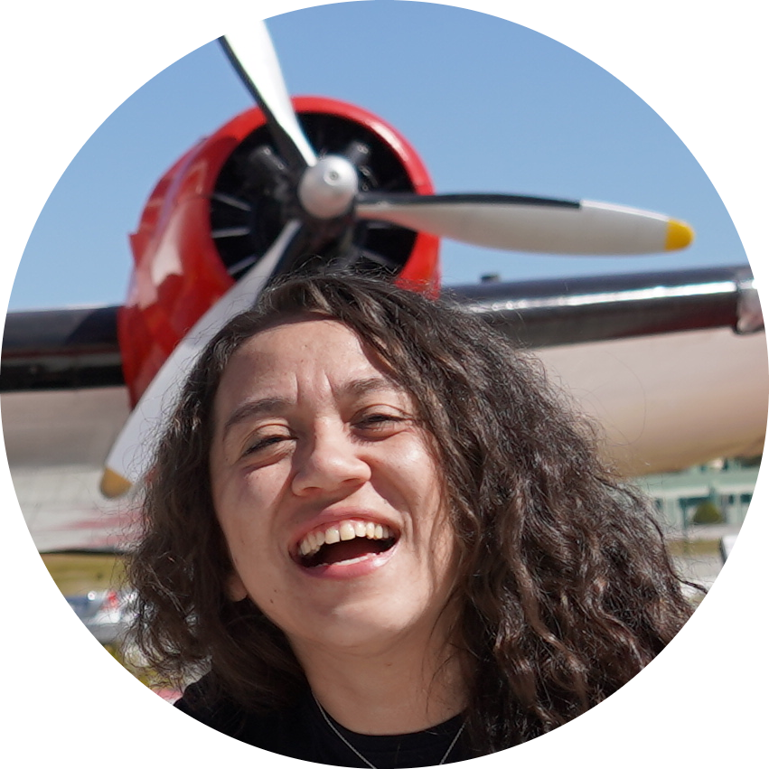
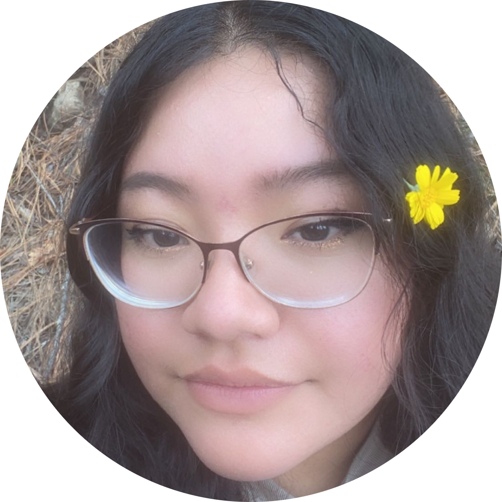
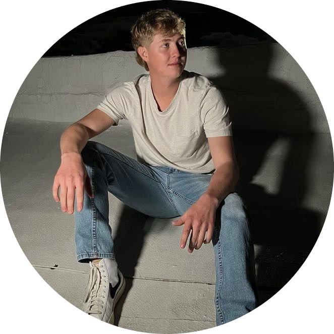

Jasper Finley
Owner/videographer/editor
Hi, I'm Jasper, a passionate film enthusiast who is new to the world of filming and editing. Despite being new in the field, I have a strong desire to learn and improve my skills. I feel as if I bring a unique perspective and creativity to the table. I am excited to be a part of the Common Celestial
team and contribute to the creation of visually stunning and impactful content. I am eager to learn from experienced professionals and grow as a filmmaker. We can't wait to see what I will bring to the table.
Alex Sanchez
videographer/photographer/editor
I'm Alex, a filmmaker and photographer with 8 years of experience in filming and editing. From a young age, I have always been passionate about film and have spent countless hours watching and rewatching movies, studying the techniques used in editing and striving to replicate them in my own work. I would like to say I have an eye for detail and always try capturing the perfect shot, I always try to make myself an asset to any project I work on. Whether he's behind the camera or in front of the computer, I will always try my hardest to dedicate myself to any project. 🎬

Zanity Garza
photographer/editor
Hello! I’m zanati, or z for short & the person behind the camera. I’ve been doing photography for 3 1/2 years now, and have just begun dipping into film photography. I’ve been able to shoot bands, senior sessions, family photos and Native American Candids, as well as traveling to do so. with that being said! I’d love to work with you! I’m always open to any any ideas you’ve always wanted to try & traveling is always a plus! So Let’s make some magic! 🙂

Jennifer Lopez
videographer/photographer/editor
Hi! My name is Jennifer Lopez. I have 6 years of Film experience. I have always had a love for videography and photography for as long as i can remember! I do sports photography, family photos, and portraits. I can pretty much film anything you’d like! Im open to trying new things so don’t be afraid to throw out crazy ideas my way!😄

Lynden Smire
videographer/photographer/editor
Hello, I'm Lynden! I'm a filmmaker, photographer, and editor with over 6 years of experience. I'm skilled in all aspects of video production, from concept development to final edit. Whether working on a short film, commercial, or documentary, I feel as if I'm able to bring his creative vision to life through his technical expertise and attention to detail. I am highly collaborative, able to work effectively with a team to achieve the best possible results. I try to keep an artistic eye, trying my hardest to capture stunning imagery and craft compelling narratives. I'm happy to be a part of the team.